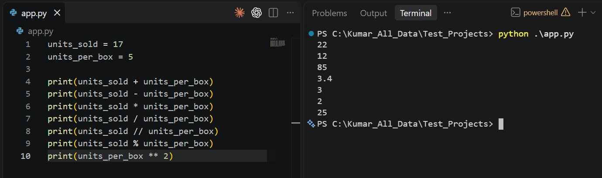
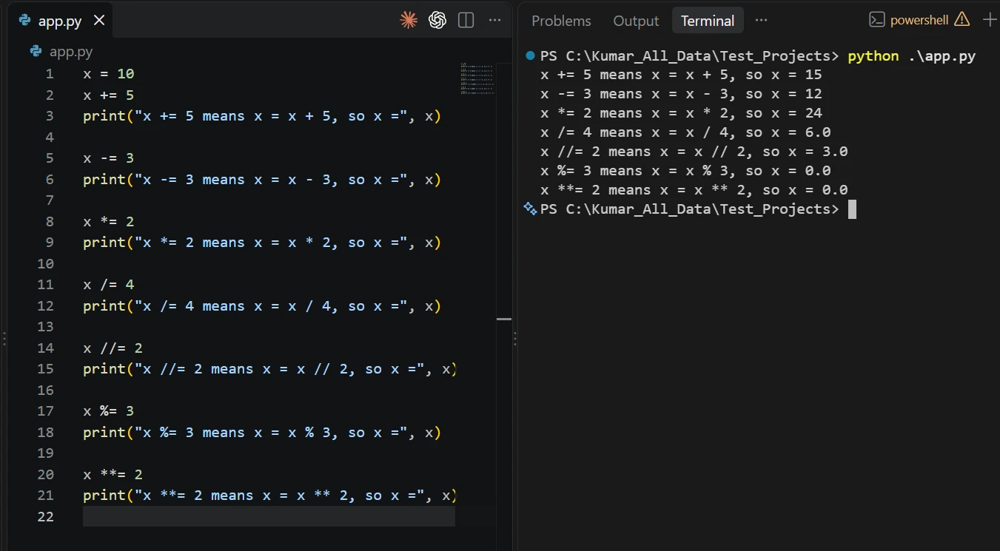
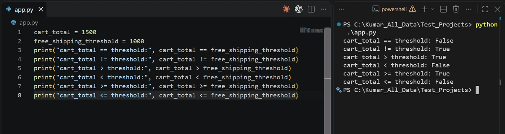
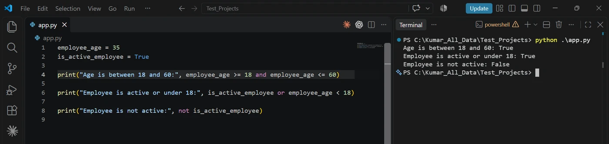
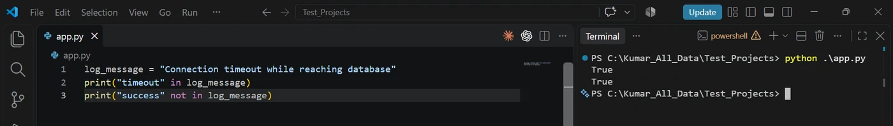
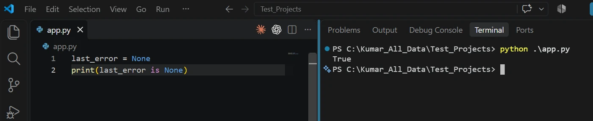
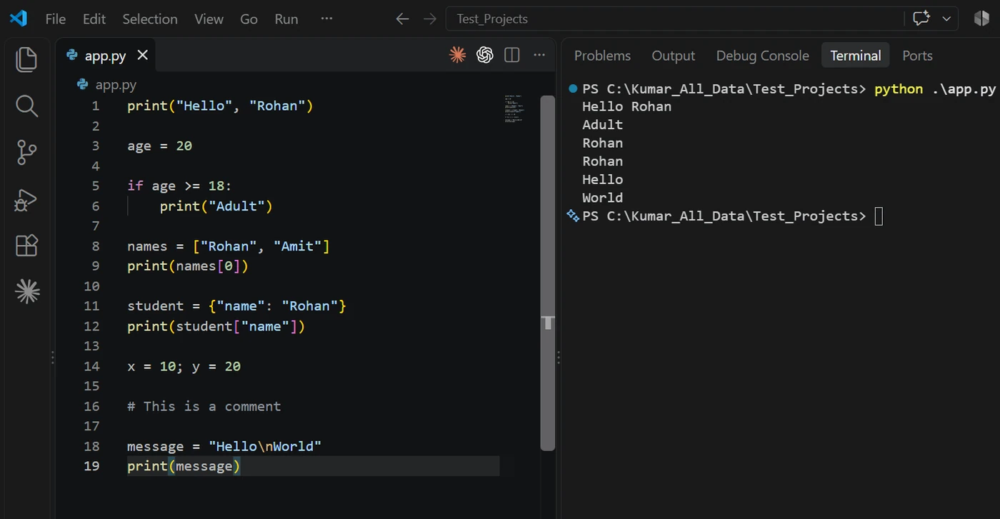
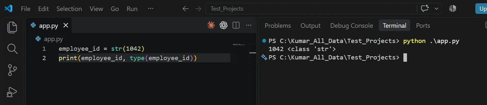

Python Basics · Part 2
Quick recap of Part 1
This is the second part of the Python Basics module, and it continues directly from Part 1. The source notes keep Part 1’s section numbering, so this part begins at Section 13, and earlier sections are referred to by their topic wherever a new concept builds on them. As before, each concept comes with what it is, its syntax, an example and the output. Run every example yourself before moving to the next topic.
In Part 1 you learned how Python runs a program, its syntax and indentation rules, comments, variables and naming, the basic data types and literals, type conversion, and input()/print(). Every interactive program so far follows this flow:
You have covered every step except one: processing. Look at this program:
unit_price = int(input("Enter unit price: "))
quantity = int(input("Enter quantity: "))
print(unit_price, quantity)Enter unit price: 250
Enter quantity: 4
250 4Same story at a railway ticket counter that asks for adult and child tickets:
adult_tickets = int(input("Enter number of adult tickets: "))
child_tickets = int(input("Enter number of child tickets: "))
print(adult_tickets, child_tickets)Enter number of adult tickets: 2
Enter number of child tickets: 1
2 1Both programs collect and convert the values correctly, but neither can work out a total, compare it to a limit or check a condition. All of that needs operators, which is where this part begins.
The road through this note
Operators that calculate
An operator is a symbol or keyword that tells Python to perform an operation on one or more values. The values it acts on are called operands.
operands: the values being worked on
operator: the action to perform
pen_price = 20
notebook_price = 45
total_price = pen_price + notebook_price
print(total_price)65Arithmetic operators
| Operator | Meaning |
|---|---|
+ | Addition |
- | Subtraction |
* | Multiplication |
/ | Division (always gives a float) |
// | Floor division (divide, then round down to a whole number) |
% | Modulus (the remainder left after division) |
** | Exponentiation (raise to a power) |
units_sold = 17
units_per_box = 5
print(units_sold + units_per_box)
print(units_sold - units_per_box)
print(units_sold * units_per_box)
print(units_sold / units_per_box)
print(units_sold // units_per_box)
print(units_sold % units_per_box)
print(units_per_box ** 2)
/, // and % confuse almost every beginner. Picture packing 17 units into boxes of 5:
/ is the exact answer, // counts the full boxes, % counts what doesn’t fit.A warehouse has 53 items to pack into cartons of 12:
total_items = 53
items_per_carton = 12
print("Exact cartons needed:", total_items / items_per_carton)
print("Full cartons:", total_items // items_per_carton)
print("Items left over:", total_items % items_per_carton)Exact cartons needed: 4.416666666666667
Full cartons: 4
Items left over: 5n % 2 == 0 tells you whether n is even. You will use this in the next note.Assignment operators
You already know =. Compound assignment operators combine a calculation with assignment, updating a variable from its own current value.
| Operator | Same as | Operator | Same as |
|---|---|---|---|
x += v | x = x + v | x //= v | x = x // v |
x -= v | x = x - v | x %= v | x = x % v |
x *= v | x = x * v | x **= v | x = x ** v |
x /= v | x = x / v |
x = 10
x += 5
print("x += 5 means x = x + 5, so x =", x)
x -= 3
print("x -= 3 means x = x - 3, so x =", x)
x *= 2
print("x *= 2 means x = x * 2, so x =", x)
x /= 4
print("x /= 4 means x = x / 4, so x =", x)
x //= 2
print("x //= 2 means x = x // 2, so x =", x)
x %= 3
print("x %= 3 means x = x % 3, so x =", x)
x **= 2
print("x **= 2 means x = x ** 2, so x =", x)
x down the terminal: 15, 12, 24, then 6.0 once /= turns it into a float, then 3.0, 0.0, 0.0./ always produces a float. Once x is a float, // and % keep it a float (3.0, 0.0).Tracking a wallet balance through the day:
wallet_balance = 5000
wallet_balance += 2000 # refund received
wallet_balance -= 1200 # electricity bill paid
wallet_balance -= 350 # mobile recharge
print("Wallet balance:", wallet_balance)Wallet balance: 5450Operators that decide: comparison and logical
Comparison operators
Comparison operators compare two values and always produce a Boolean: True or False.
| Operator | Meaning | Operator | Meaning |
|---|---|---|---|
== | Equal to | != | Not equal to |
> | Greater than | < | Less than |
>= | Greater than or equal to | <= | Less than or equal to |
cart_total = 1500
free_shipping_threshold = 1000
print("cart_total == threshold:", cart_total == free_shipping_threshold)
print("cart_total != threshold:", cart_total != free_shipping_threshold)
print("cart_total > threshold:", cart_total > free_shipping_threshold)
print("cart_total < threshold:", cart_total < free_shipping_threshold)
print("cart_total >= threshold:", cart_total >= free_shipping_threshold)
print("cart_total <= threshold:", cart_total <= free_shipping_threshold)
Checking a student’s result:
student_marks = 72
passing_marks = 40
print("Passed:", student_marks >= passing_marks)
print("Scored full marks:", student_marks == 100)
print("Below passing marks:", student_marks < passing_marks)Passed: True
Scored full marks: False
Below passing marks: False= vs == = stores a value; == compares two values. Writing if marks = 100: is a SyntaxError.Logical operators
Logical operators combine Booleans (or expressions that produce Booleans) into one Boolean.
and
True only if both sides are True.
or
True if at least one side is True.
not
Flips a Boolean: True ↔ False.
A | B | A and B | A or B | not A |
|---|---|---|---|---|
| True | True | True | True | False |
| True | False | False | True | False |
| False | True | False | True | True |
| False | False | False | False | True |
employee_age = 35
is_active_employee = True
print("Age is between 18 and 60:", employee_age >= 18 and employee_age <= 60)
print("Employee is active or under 18:", is_active_employee or employee_age < 18)
print("Employee is not active:", not is_active_employee)
and and or both give True here; not flips True to False.A bank approves a loan only if the applicant is 21 to 60 years old and earns at least 25,000 a month:
applicant_age = 29
monthly_income = 42000
has_missed_payments = False
print("Eligible for loan:", applicant_age >= 21 and applicant_age <= 60 and monthly_income >= 25000)
print("Needs manual review:", has_missed_payments or monthly_income < 25000)
print("Clean payment record:", not has_missed_payments)Eligible for loan: True
Needs manual review: False
Clean payment record: Trueand/or/not expressions. Write each rule as a named Boolean (is_eligible = …) so the customer can read and confirm the logic with you.Membership and identity operators
Membership: in and not in
Membership operators check whether a value exists inside a sequence, such as a string, and return a Boolean.
| Operator | Meaning |
|---|---|
in | True if the value is found |
not in | True if the value is not found |
log_message = "Connection timeout while reaching database"
print("timeout" in log_message)
print("success" not in log_message)
True.A sign-up form checks that an email has an @ and no spaces:
email = "priya.sharma@example.com"
print("Contains @:", "@" in email)
print("Has no spaces:", " " not in email)Contains @: True
Has no spaces: TrueIdentity: is and is not
Identity operators check whether two names refer to the exact same object in memory, not just equal-looking values. As a beginner, you will mostly use them to check for None (covered below).
| Operator | Meaning |
|---|---|
is | True if both refer to the same object |
is not | True if they refer to different objects |
last_error = None
print(last_error is None)
last_error is the one and only None object, so is None gives True.A delivery app checks whether a delivery partner has been assigned yet:
assigned_partner = None
print("Waiting for partner:", assigned_partner is None)
assigned_partner = "Ravi"
print("Partner assigned:", assigned_partner is not None)Waiting for partner: True
Partner assigned: Trueis to compare values Use == for numbers and strings. is asks “same object?”, which can give surprising answers for equal values. Keep is for None.You will lean on logical, membership and identity operators constantly once you start writing if statements in the next note, because real decisions usually depend on more than one condition.
Operator precedence: what Python calculates first
When an expression has more than one operator, the order matters:
result = 10 + 5 * 2Reading left to right suggests (10 + 5) * 2 = 30. But Python follows a fixed order of operations called operator precedence, like BODMAS/PEMDAS in school maths, so it calculates 10 + (5 * 2) = 20. Python finds the highest-priority operator, calculates that part, and repeats until one value is left.
| Priority | Operator(s) | Meaning |
|---|---|---|
| 1 (highest) | ( ) | Parentheses: always first |
| 2 | ** | Exponentiation |
| 3 | * / // % | Multiplication, division, floor division, modulus |
| 4 | + - | Addition, subtraction |
| 5 | == != > < >= <= (and in, is) | Comparison, membership, identity |
| 6 | not | Logical NOT |
| 7 | and | Logical AND |
| 8 (lowest) | or | Logical OR |
Operators with equal priority are evaluated left to right.
** groups right to left: 2 ** 3 ** 2 is 2 ** 9 = 512. And ** binds tighter than a leading minus: -2 ** 2 is -4, not 4. When in doubt, add parentheses.Worked example 1: multiplication before addition
print(10 + 5 * 2)20* outranks +, so 5 * 2 = 10 first, then 10 + 10 = 20. A mobile bill with a fixed rental of 199 plus 2 GB of extra data at 25 per GB works the same way, and so does a food order of 3 plates at 180 plus a delivery charge of 50:
monthly_bill = 199 + 2 * 25
print(monthly_bill)
bill_amount = 50 + 3 * 180
print(bill_amount)249
590Worked example 2: several operators mixed
print(2 + 3 * 4 - 6 / 2)11.0Monthly pay: basic salary 30,000, plus 10 overtime hours at 300, minus a yearly tax of 12,000 split over 12 months:
net_monthly_pay = 30000 + 10 * 300 - 12000 / 12
print(net_monthly_pay)32000.0Parentheses override precedence
print((10 + 5) * 2)30The parentheses force 10 + 5 = 15 first, then 15 * 2 = 30. Without them the answer is 20. Four friends each buying a movie ticket and a snack combo:
ticket_price = 220
snack_price = 150
number_of_friends = 4
total_cost = (ticket_price + snack_price) * number_of_friends
print(total_cost)1480Even when they don’t change the result, parentheses make your intent obvious:
total_payable = (unit_price * quantity) + shipping_fee - discountAn average needs them, otherwise only english would be divided by 3:
maths = 78
science = 85
english = 90
average_marks = (maths + science + english) / 3
print(average_marks)84.33333333333333Separators and delimiters
Several symbols give Python code its structure. Here are the common ones:
| Symbol | Purpose | Example |
|---|---|---|
, comma | Separates items | print("Hello", "Rohan") |
: colon | Starts a code block | if age >= 18: |
( ) parentheses | Calls a function or groups an expression | print("Hello") |
[ ] square brackets | Creates lists; accesses items by index | names[0] |
{ } curly braces | Creates sets and dictionaries | {"name": "Rohan"} |
. period | Accesses an attribute or method | student.name |
; semicolon | Separates statements on one line (rarely used) | x = 10; y = 20 |
# hash | Starts a comment | # This is a comment |
' " quotes | Create strings | "Hello" |
\ backslash | Starts an escape sequence | "Hello\nWorld" |
age = 20
print("Hello", "Rohan") # comma
if age >= 18: # colon
print("Adult")
names = ["Rohan", "Amit"] # square brackets
print(names[0]) # square brackets
student = {"name": "Rohan"} # curly braces
print(student["name"])
x = 10; y = 20 # semicolon
# This is a comment # hash
message = "Hello\nWorld" # backslash
print(message)
\n in "Hello\nWorld" becomes a real line break, so the last two output lines are Hello and World.Each symbol has a specific role in structuring or writing Python code.
Putting them together for a customer’s delivery label:
customer = {"name": "Anita", "city": "Pune"} # curly braces
items = ["Rice", "Oil", "Sugar"] # square brackets
print("Customer:", customer["name"]) # comma and parentheses
print("First item:", items[0]) # square brackets
order_id = 501; amount = 840 # semicolon
if amount >= 500: # colon
print("Free delivery")
label = "Deliver to:\tPune\nPay on delivery" # backslash escapes
print(label)Customer: Anita
First item: Rice
Free delivery
Deliver to: Pune
Pay on deliveryLists and dictionaries get a full note of their own (Data Structures); for now just recognise the brackets.
Strings: working with text
A string (str) is Python’s type for text: a sequence of characters. Names, messages, file paths, responses from other systems: almost every real program handles strings.
Creating strings
Write text inside quotes:
employee_name = "Deepak"
language = 'Python'
passenger_name = "Arjun Mehta" # details on a train ticket
train_name = 'Shatabdi Express'
coach = "C2"You can also build strings by concatenation (below) or by converting another type with str():
employee_id = str(1042)
print(employee_id, type(employee_id))
str.pin_code = str(560001) # a PIN code stored as part of an address
print(pin_code, type(pin_code))560001 <class 'str'>Single vs double quotes
There is no difference in behaviour. If the text contains an apostrophe, wrap it in double quotes so the apostrophe isn’t mistaken for the closing quote:
status_message = "It's ready for deployment"
shop_notice = "We're closed on Sundays"
review = "The chef's special was excellent"Escape sequences
An escape sequence is a backslash plus a character that stands for something hard to type directly.
| Escape | Meaning |
|---|---|
\n | New line |
\t | Tab space |
\\ | A single backslash |
\' | A single quote inside a single-quoted string |
\" | A double quote inside a double-quoted string |
print("Name:\tDeepak\nDepartment:\tEngineering")
print("Item\tQty\tPrice\nTea\t2\t40\nSamosa\t3\t60") # a small bill in columnsName: Deepak
Department: Engineering
Item Qty Price
Tea 2 40
Samosa 3 60To treat backslashes as plain characters (handy for Windows paths), make a raw string by putting r before the opening quote:
file_path = r"C:\reports\2026\summary.csv"
print(file_path)
backup_folder = r"D:\backups\photos\2026"
print(backup_folder)C:\reports\2026\summary.csv
D:\backups\photos\2026Concatenation
Concatenation joins strings with +:
first_name = "Deepak"
last_name = "Mohanty"
full_name = first_name + " " + last_name
print(full_name)Deepak MohantyNotice the " " in the middle; without it you get DeepakMohanty. An SMS telling a customer their order has shipped:
customer_name = "Kavya"
order_number = "ORD-7781"
sms_text = "Hi " + customer_name + ", your order " + order_number + " has been shipped."
print(sms_text)Hi Kavya, your order ORD-7781 has been shipped."Total: " + 500 is a TypeError. Convert the number first with str(500), or use an f-string (below).Repetition
* between a string and a whole number repeats the string:
separator = "-" * 10
print(separator)
print("=" * 30)
print("CITY MART RECEIPT")
print("=" * 30)----------
==============================
CITY MART RECEIPT
==============================Length
len() returns the number of characters, including spaces and punctuation:
order_id = "ORD-2026-0042"
print(len(order_id))
password = "Blue@2026"
print("Password length:", len(password))
print("Long enough:", len(password) >= 8)13
Password length: 9
Long enough: TrueString methods, membership and comparison
A method is a function that belongs to a type, called with a dot after the value: value.method(). Strings are immutable, so every method returns a new string and the original stays unchanged.
| Method | Returns | Example | Result |
|---|---|---|---|
.lower() | all letters lowercase | "SUCCESS".lower() | success |
.upper() | all letters uppercase | "prod-01".upper() | PROD-01 |
.strip() | leading and trailing whitespace removed | " Bengaluru ".strip() | Bengaluru |
.replace(old, new) | every old replaced by new | "98450-12345".replace("-", "") | 9845012345 |
.split(sep) | a list of pieces, cut at each sep (any whitespace if none given) | "a,b".split(",") | ['a', 'b'] |
status = "SUCCESS"
print(status.lower())
user_answer = "YES" # user typed in capitals
print(user_answer.lower() == "yes")
server_name = "prod-01"
print(server_name.upper())
vehicle_number = "ka01ab1234" # store registration numbers in capitals
print(vehicle_number.upper())
city_name = " Bengaluru "
print(city_name.strip())success
True
PROD-01
KA01AB1234
BengaluruCleaning a username the user typed with extra spaces:
username = input("Enter username: ").strip()
print("Logged in as", username)Enter username: priya_s
Logged in as priya_s.replace(old, new) swaps every occurrence of old for new. .split(separator) breaks a string into a list of smaller strings wherever the given separator occurs; if no separator is given, it splits on any whitespace by default.
file_path = "C:/old_folder/report.csv"
print(file_path.replace("old_folder", "new_folder"))
phone_number = "98450-12345"
print(phone_number.replace("-", ""))
log_entry = "2026-09-21,ERROR,Disk full"
fields = log_entry.split(",")
print(fields)
student_record = "Rahul,21,Computer Science" # one line of data from a file
details = student_record.split(",")
print(details)C:/new_folder/report.csv
9845012345
['2026-09-21', 'ERROR', 'Disk full']
['Rahul', '21', 'Computer Science']status.lower(), status is still "SUCCESS". To keep the result, assign it: status = status.lower().Membership in strings
in checks whether one string appears inside another:
log_message = "Connection timeout while reaching database"
print("timeout" in log_message)
review = "The package arrived Damaged and late"
print("damaged" in review.lower()) # lower() first, so "Damaged" still matchesTrue
TrueComparison is case-sensitive
print("python" == "Python")FalseSame spelling, different capitals, so not equal. When comparing what a user typed against a stored value, convert both to the same case first:
stored_coupon = "SAVE50"
entered_coupon = "save50"
print(entered_coupon == stored_coupon)
print(entered_coupon.upper() == stored_coupon)False
True" Pune", "PUNE", "pune ". Normalising with .strip().lower() before comparing or grouping is one of the first things you do with any CSV or log file a customer hands you.String indexing: one character at a time
Because a string is a sequence, each character has a fixed position called its index. Python counts from 0, not 1, and this trips up almost every beginner at first.
Positive indexing
Put the index in square brackets after the string or variable:
word = "Python"
print(word[0])
print(word[1])
print(word[5])P
y
nInitials for a profile avatar:
first_name = "Sneha"
last_name = "Rao"
initials = first_name[0] + last_name[0]
print(initials)SRNegative indexing
Negative indexes count backwards from the end, starting at -1 for the last character:
word = "Python"
print(word[-1])
vehicle_number = "DL3CAF4527" # last digit, for an odd-even traffic rule
print("Last digit:", vehicle_number[-1])n
Last digit: 7Index out of range
Trying to access an index that does not exist in the string causes an error, rather than returning something meaningless:
word = "Python"
print(word[10])IndexError: string index out of range"Python" has 6 characters, so valid positive indexes are 0 to 5. The same thing happens reading a fifth digit from a 4-digit OTP:
otp = "4821"
print(otp[4]) # IndexError: valid indexes are 0 to 3len(s) - 1.String slicing: cutting out a piece
Indexing gives one character; slicing extracts a whole range in one step:
string_value[start:stop]order_id = "ORD-2026-0042"
print(order_id[0:3])ORDWhy the stop index is excluded
The slice stops just before the stop index. order_id[0:3] takes indexes 0, 1 and 2 (O, R, D) and stops before index 3 (-). This rule is the same everywhere slicing is used in Python.
Extracting the year from a date of birth stored as text:
date_of_birth = "1998-07-14"
print(date_of_birth[0:4])1998Omitting start or stop
Leave out start and Python begins at index 0; leave out stop and it goes to the end.
order_id = "ORD-2026-0042"
print(order_id[:3])
print(order_id[9:])
contact = "+91-9876543210" # country code and mobile number
print(contact[:3])
print(contact[4:])ORD
0042
+91
9876543210Using a step
A third value, the step, says how many positions to jump each time:
sequence[start:stop:step]order_id = "ORD-2026-0042"
print(order_id[::2])
batch_code = "A1B2C3D4" # letters and digits alternate
print(batch_code[::2]) # letters
print(batch_code[1::2]) # digitsOD22-02
ABCD
1234Reversing a string
A step of -1 with no start or stop walks backwards through the whole string:
order_id = "ORD-2026-0042"
print(order_id[::-1])
word = "madam" # a palindrome reads the same both ways
print(word == word[::-1])2400-6202-DRO
True"Python"[2:100] is just "thon".f-strings: building dynamic text
The problem with plain concatenation
Once you mix several pieces of text with several variables, especially non-strings, + gets clumsy:
name = "Deepak"
age = 30
print("Employee " + name + " is " + str(age) + " years old")
account_holder = "Meera"
amount = 2500
print("Dear " + account_holder + ", Rs. " + str(amount) + " has been credited to your account.")Employee Deepak is 30 years old
Dear Meera, Rs. 2500 has been credited to your account.What is an f-string?
An f-string (“formatted string literal”) has an f right before the opening quote. Anything inside { } is evaluated and inserted into the text, converted to a string automatically.
name = "Deepak"
age = 30
print(f"Employee {name} is {age} years old")
account_holder = "Meera"
amount = 2500
print(f"Dear {account_holder}, Rs. {amount} has been credited to your account.")Employee Deepak is 30 years old
Dear Meera, Rs. 2500 has been credited to your account.Expressions inside the braces
Any valid expression works, including calculations:
unit_price = 250
quantity = 4
print(f"Total amount: {unit_price * quantity}")
units_consumed = 180
rate_per_unit = 6.5
print(f"Electricity bill: Rs. {units_consumed * rate_per_unit}")Total amount: 1000
Electricity bill: Rs. 1170.0Formatting numbers
After a colon inside the braces you can add a format specification:
the value to show
colon: “format it like this”
.2f: fixed-point, exactly 2 digits after the decimal point
unit_price = 99.4567
print(f"{unit_price:.2f}")
fuel_cost = 1873.4567
print(f"Fuel cost: Rs. {fuel_cost:.2f}")99.46
Fuel cost: Rs. 1873.46Add , for thousands separators, and % to show a fraction as a percentage:
total_revenue = 1234567.891
conversion_rate = 0.8267
print(f"{total_revenue:,.2f}")
print(f"{conversion_rate:.1%}")
annual_profit = 45872310.5
growth_rate = 0.1245
print(f"Annual profit: Rs. {annual_profit:,.2f}")
print(f"Growth this year: {growth_rate:.1%}")1,234,567.89
82.7%
Annual profit: Rs. 45,872,310.50
Growth this year: 12.4%| Spec | Means | Example → result |
|---|---|---|
.2f | 2 decimal places | 99.4567 → 99.46 |
,.2f | thousands separators + 2 decimals | 1234567.891 → 1,234,567.89 |
.1% | multiply by 100, 1 decimal, add % | 0.8267 → 82.7% |
Why f-strings are preferred: they are more readable than concatenation, need no manual str(), accept full expressions, and format numbers without extra function calls. They are the standard way to build text in modern Python.
True, False and None
Boolean values
A Boolean (bool) has exactly two possible values: True or False. Every decision a program makes comes down to one of these two. Every comparison produces one:
cpu_usage = 85
alert_threshold = 80
print(cpu_usage > alert_threshold)
battery_level = 15
low_battery_limit = 20
print(battery_level < low_battery_limit)True
TrueBooleans are often stored in variables to track state:
is_server_online = True
is_maintenance_mode = False
is_door_locked = True # a smart home
is_light_on = False
is_ac_running = TrueCombining Booleans with logical operators gives another Boolean:
print(True and True)
print(True and False)
print(True or False)
print(not True)
has_paid_fee = True # can a student enter the exam hall?
has_hall_ticket = False
print(has_paid_fee and has_hall_ticket)
print(has_paid_fee or has_hall_ticket)
print(not has_hall_ticket)True
False
True
False
False
True
TrueTruthy and falsy values
Whenever Python needs a yes/no answer, it can treat any value as “truthy” (acts like True) or “falsy” (acts like False). Values that mean “nothing” or “empty” are falsy: 0, 0.0, "" and None (and, as you’ll see later, empty collections). Almost everything else is truthy.
print(bool(0))
print(bool(""))
print(bool("Python"))
print(bool(10))False
False
True
TrueDid the user leave the feedback box empty? Here they just pressed Enter:
feedback_text = input("Enter your feedback: ")
print("Feedback given:", bool(feedback_text))Enter your feedback:
Feedback given: FalseBooleans drive conditions, validation and loops; the next note (Control Flow) is built entirely on them.
None: the absence of a value
None is a special value meaning “deliberately no value”. Its type is NoneType, and there is only ever one None object in a running program. It is used for a value not assigned yet, data that is genuinely missing, or the result of a function that doesn’t return anything (more in the Functions note).
last_error_message = None
profile_photo = None # a new user hasn't uploaded a photo
middle_name = None # ...or added a middle nameNone is not 0, False or ""
None is falsy, but it is not equal to 0, False or an empty string. Those are “zero” or “empty” values; None is the total absence of a value.
print(None == 0)
print(None == False)
print(None == "")False
False
Falsestock_count = None # not counted yet
sold_out_count = 0 # counted, nothing left
print(stock_count == sold_out_count)FalseChecking for None
Because None is a single unique object, the recommended check is is, not ==:
last_error_message = None
print(last_error_message is None)
delivery_date = None
print("Delivery date pending:", delivery_date is None)True
Delivery date pending: TrueBuilt-in functions: Python’s ready-made tools
A built-in function ships with Python and is always available, no import needed. You already know print(), input(), type(), int(), float(), str() and bool(). Here are five more.
len()
Number of items in a sequence; for a string, the number of characters.
abs()
Absolute (non-negative) value of a number.
round()
Rounds to a number of decimal places, or to a whole number if none given.
min() / max()
Smallest / largest of a group of values.
sum()
Adds up a group of numbers.
print(len("Python"))
sms_message = "Your OTP is 4821. Do not share it with anyone."
print("Characters used:", len(sms_message))6
Characters used: 46print(abs(-10))
expected_cash = 15000 # cash register mismatch, whichever way round
actual_cash = 14650
print("Cash mismatch:", abs(actual_cash - expected_cash))10
Cash mismatch: 350print(round(10.567, 2))
print(round(2.5))
average_rating = (4 + 5 + 3 + 5 + 4) / 5
print(round(average_rating, 1))10.57
2
4.2round(2.5) 2, not 3? Python rounds exact halves to the nearest even number (“banker’s rounding”), so round(2.5) is 2 and round(3.5) is 4. This avoids always pushing totals upward.The square brackets below make a list, a group of values (full details in Data Structures):
daily_temperatures = [28, 31, 26, 33, 29]
print(min(daily_temperatures))
print(max(daily_temperatures))
flight_fares = [4520, 3899, 5210, 4105]
print("Cheapest fare:", min(flight_fares))
print("Costliest fare:", max(flight_fares))26
33
Cheapest fare: 3899
Costliest fare: 5210weekly_sales = [1200, 850, 430, 275]
print(sum(weekly_sales))
monthly_expenses = [12000, 3500, 2200, 1800, 950]
print("Total spent this month:", sum(monthly_expenses))2755
Total spent this month: 20450Common beginner errors
Every programmer meets errors constantly. What matters is reading the message and understanding what went wrong.
| Error | Cause |
|---|---|
SyntaxError | A grammar rule is broken, such as a missing quote or parenthesis |
NameError | Using a name Python has never seen (often a typo) |
TypeError | Incompatible types combined in one operation |
ValueError | A value of the right type but unusable, such as int("hello") |
IndentationError | Missing or inconsistent indentation |
IndexError | Accessing a position that doesn’t exist |
SyntaxError
print("Deployment started"bill_total = 1250
print("Bill total:", bill_totalSyntaxError: '(' was never closedNameError
print(employee_name)customer_name = "Rohit"
print(customer_nme) # misspelledNameError: name 'employee_name' is not defined
NameError: name 'customer_nme' is not defined. Did you mean: 'customer_name'?TypeError
print("Total: " + 500)items_in_cart = 3
print("Items in cart: " + items_in_cart)TypeError: can only concatenate str (not "int") to strFix it by converting the number to a string first:
print("Total: " + str(500))
items_in_cart = 3
print("Items in cart: " + str(items_in_cart))Total: 500
Items in cart: 3ValueError
int("hello")age = int(input("Enter your age: "))
# the user types: twentyValueError: invalid literal for int() with base 10: 'hello'
ValueError: invalid literal for int() with base 10: 'twenty'IndentationError
if True:
print("This will fail")cart_total = 1200
if cart_total >= 1000:
print("Free delivery applied")IndentationError: expected an indented block after 'if' statement on line 1
IndentationError: expected an indented block after 'if' statement on line 3IndexError
server_name = "Python"
print(server_name[10])pin_code = "560001"
print(pin_code[6]) # valid indexes are 0 to 5IndexError: string index out of rangeA general approach to fixing errors
Don’t guess randomly. Work through it:
- 1Read the message carefullyThe whole traceback, not just the red colour.
- 2Identify the error typeIt is on the last line:
TypeError,NameError… - 3Find the line numberThe traceback points at the line (and often the exact spot with
^). - 4Connect it to the concept
TypeError→ data types;IndexError→ indexing; and so on. - 5Fix the cause, not the symptom→ e.g. convert input properly instead of deleting the line
Key terms
- Operator
- A symbol or keyword, such as
+orand, that tells Python to perform an operation on values called operands. - Floor division (//)
- Divides and rounds the result down to a whole number:
17 // 5is 3. - Modulus (%)
- Gives the remainder left after division:
17 % 5is 2. - Compound assignment
- An operator like
+=or-=that updates a variable from its own value:x += 5meansx = x + 5. - Operator precedence
- The fixed order in which Python evaluates operators in one expression: parentheses, then
**, then* / // %, then+ -, then comparisons, thennot,and,or. - Membership operator
in/not in: checks whether a value is found inside a sequence such as a string.- Identity operator
is/is not: checks whether two names refer to the same object; mainly used asx is None.- Escape sequence
- A backslash combination inside a string that stands for a special character, such as
\n(new line) or\t(tab). - Raw string
- A string with
rbefore the quote, in which backslashes are kept as plain characters:r"C:\reports". - Immutable
- Cannot be changed after creation; string methods therefore return new strings rather than modifying the original.
- Index
- A character’s position in a string, counted from 0 at the front or from -1 at the back.
- Slicing
- Extracting part of a sequence with
[start:stop:step]; start is included, stop is excluded. - f-string
- A string prefixed with
fin which expressions inside{ }are evaluated and inserted, with optional formatting like:.2f. - Truthy / falsy
- How any value behaves when Python needs a yes/no answer; 0, empty strings and None are falsy, most other values are truthy.
- None
- Python’s single special value meaning “no value”, of type
NoneType; check for it withis None.
Self-check
Pick an answer. You’ll see right away whether it’s correct and why.
What does 23 % 4 give?
- 5.75
- 5
- 3
- 4
4 goes into 23 five times (20), leaving a remainder of 3. % returns that remainder.
What does print(2 + 3 * 4) show?
- 14
- 20
- 24
- 9
* has higher precedence than +, so it is 2 + 12 = 14.
code = "ORD-2026". What is code[4:]?
"ORD-""-2026""2""2026"
Start at index 4 (the 2) and, with no stop, go to the end.
What is "Python"[-2]?
"n""o""y"- An
IndexError
-1 is the last character (n), so -2 is the one before it, o.
Which line correctly prints Total: 500?
print("Total: " + 500)print("Total: {500}")print(f"Total: {500}")print("Total: " - 500)
Only the f-string evaluates {500}. Option 1 is a TypeError; option 2 lacks the f and prints the braces literally.
What does print(None == 0) show?
FalseTrueNone- An error
None means “no value”; 0 is a value (zero). Both are falsy, but they are not equal.
name = " Asha ". After name.strip() on its own line, what is name?
"Asha"" Asha "None" Asha"
Strings are immutable. .strip() returns a new string; unless you assign it back, name is unchanged.
Which value is truthy?
0""None"False"
"False" is a non-empty string, so it is truthy. The other three are classic falsy values.
The last line of an error says NameError: name 'totl' is not defined. The most likely cause?
- A missing parenthesis
- Adding a string and a number
- A misspelled variable name
- Wrong indentation
A NameError means Python has never seen that name, which is usually a typo of a real one.
All of it, in one sentence
Operators do the processing (calculate, compare, combine), precedence decides their order, strings can be indexed, sliced and formatted with f-strings, every decision boils down to True or False with None meaning “no value”, and an error’s last line and line number tell you what to fix.
Next up: Control Flow, where those Booleans start steering your program with if, elif, else and loops.
— Vishwa Mohan